Cách khắc phục lỗi không vào được Facebook trên máy tính

Ty Nguyen
CEO ❤️ AhaChat. Love babies & chatbot.
Hiện nay, Facebook là một trong những mạng xã hội được nhiều người dùng nhất trên thế giới và cũng có rất nhiều doanh nghiệp, cá nhân làm việc thông qua trang mạng xã hội này. Tuy nhiên, đôi lúc bạn sẽ gặp phải trường hợp không vào được Facebook trên máy tính, điều này khiến cho nhiều người khó chịu, thậm chí ảnh hưởng đến công việc gây ra nỗi lo lắng. Vậy nguyên nhân của lỗi này là gì? Cách khắc phục lỗi không vào được Facebook trên máy tính như thế nào. Tất cả đều được giải đáp trong bài viết dưới đây, cùng theo dõi nhé!
I. Nguyên nhân không truy cập được Facebook trên máy tính
Việc không truy cập được Facebook trên máy tính có rất nhiều nguyên nhân khác nhau. Dưới đây chúng tôi đề cập đến một số nguyên nhân thường gặp nhất về trường hợp không vào được Facebook trên máy tính, đó là:
Máy tính có cài tường lửa hay các phần mềm diệt virus có chặn trang web Facebook.
Trình duyệt web bị lỗi, bạn cần phải xóa cache trình duyệt mới có thể đăng nhập được.
Có nhiều thiết bị chạy ngầm trong máy tính của bạn làm full disk. Tình trạng này gây ra hiện tượng máy đơ, kết nối với mạng chậm dẫn đến không vào được Facebook.
Wifi tại nơi mà bạn dùng để truy cập vào mạng Internet chặn không cho vào Facebook.
II. Cách khắc phục lỗi không vào được Facebook trên máy tính
Có rất nhiều cách để khắc phục lỗi không vào được Facebook trên máy tính. Dưới đây là 3 cách dễ dàng, nhanh chóng và hiệu quả nhất cho hầu hết mọi người.
1. Sử dụng trình duyệt Cốc Cốc để vào Facebook trên máy tính
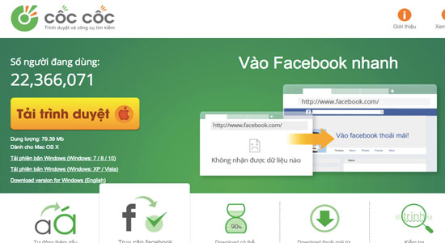
Cốc cốc là trình duyệt web được nhiều người biết đến, do người Việt sáng lập ra nên có rất nhiều tính năng ưu việt. Hơn nữa, Cốc Cốc được lập trình và có khả năng mã hoá facebook nên khi bạn truy cập vào Facebook từ trình duyệt Cốc Cốc sẽ không lo bị chặn từ các nhà cung cấp mạng.
2. Đổi DNS trên hệ điều hành Windows
Đổi DNS là cách khắc phục lỗi không vào được Facebook trên máy tính phổ biến và được nhiều người dùng nhất. Với cách này bạn thực hiện như sau:
- Bước 1: Bạn ấn chuột phải vào biểu tượng wifi trên máy tính, rồi bấm chọn Open Network & Internet settings.
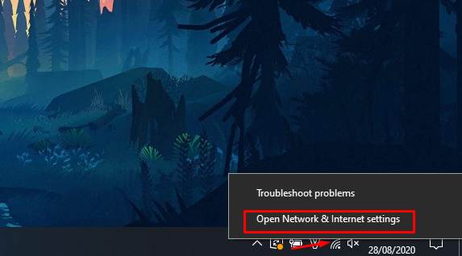
- Bước 2: Tại giao diện Open Network & Internet settings, bạn chọn mục Change adapter options.
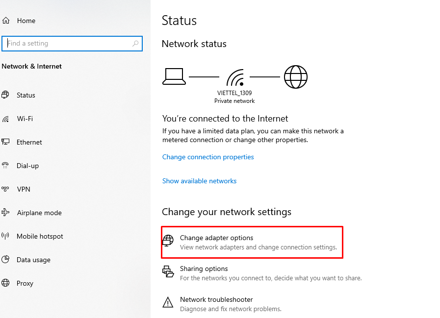
- Bước 3: Bạn click chuột phải vào wifi mà bạn đang kết nối và chọn Properties.
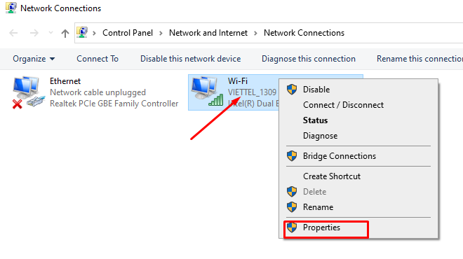
- Bước 4: Sau khi bấm chọn Properties, xuất hiện cửa sổ Wi-Fi Properties bạn tìm mục Internet Protocol Version 4 (TCP/iPv4) và double click chuột
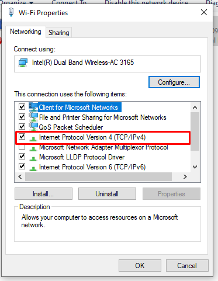
- Bước 5: Lúc này xuất hiện cửa sổ Internet Protocol Version 4 (TCP/iPv4) Properties để đổi DNS.
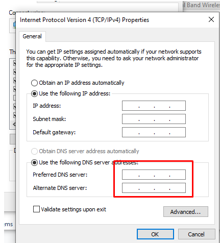
3. Sửa file Host trên máy tính
- Bước 1: Bạn mở file Host ở trong máy tính bằng cách ấn tổ hợp phím Windows + R.
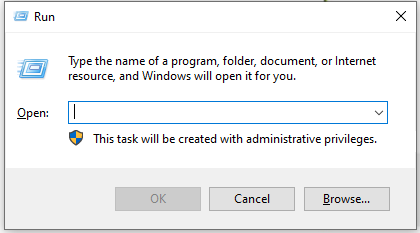
- Bước 2: Bạn copy “C:\Windows\System32\Drivers\etc” vào ô trống Open, sau đó bấm chọn OK
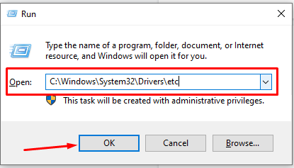
- Bước 3: Bạn click chuột phải vào Hots và chọn Open With
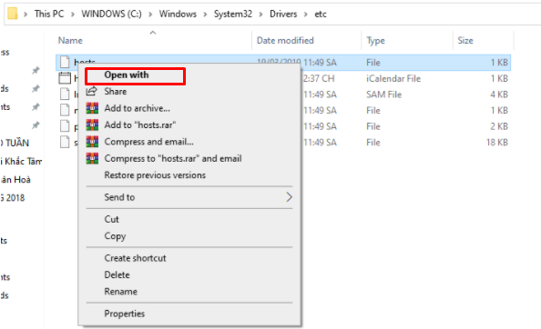
- Bước 4: Sau khi bấm Open with, bạn chọn Notepad.
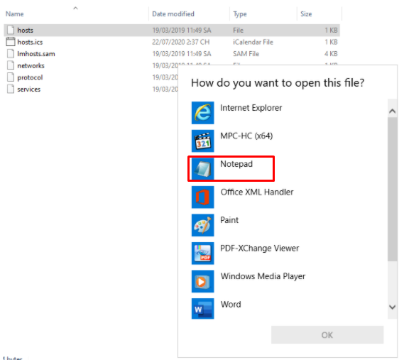
- Bước 6: Bạn copy các đoạn mã sau:
125.252.224.88 facebook.com125.252.224.88 www.facebook.com69.63.181.12 apps.facebook.com153.16.15.71 facebook.com153.16.15.71 www.facebook.com153.16.15.71 apps.facebook.com153.16.15.71 login.facebook.com153.16.15.71 graph.facebook.com153.16.15.71 static.ak.connect.facebook.com153.16.15.71 developers.facebook.com153.16.15.71 error.facebook.com153.16.15.71 upload.facebook.com153.16.15.71 register.facebook.com153.16.15.71 bigzipfiles.facebook.com153.16.15.71 pixel.facebook.com66.220.153.11 apps.facebook.com66.220.153.11 facebook.com66.220.153.11 www.facebook.com66.220.153.11 login.facebook.com
Sau đó dán vào dưới cùng ở phần giao diện Notepad
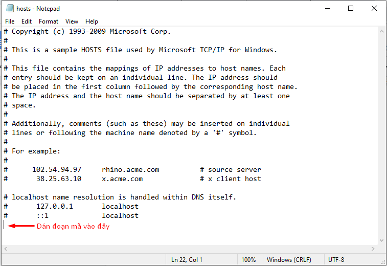
Cuối cùng, bạn bấm Ctrl + S để lưu lại nhé. Sau khi lưu, bạn vào web đăng nhập Facebook được chưa nhé. Nếu vẫn chưa vào được thì có thể copy đoạn mã khác thay vào là được nhé.
Trên đây là một số nguyên nhân và một số cách khắc phục lỗi không vào được facebook trên máy tính phổ biến và được nhiều người lựa chọn nhất. Hy vọng với những chia sẻ đó đã giúp bạn có thêm những thông tin hữu ích khi sử dụng mạng xã hội Facebook. Nếu bạn có bất kỳ câu hỏi hay góp ý gì thì đừng quên để lại bình luận ngay dưới đây để chúng tôi giải đáp cho bạn nhé. Chúc các bạn thành công!